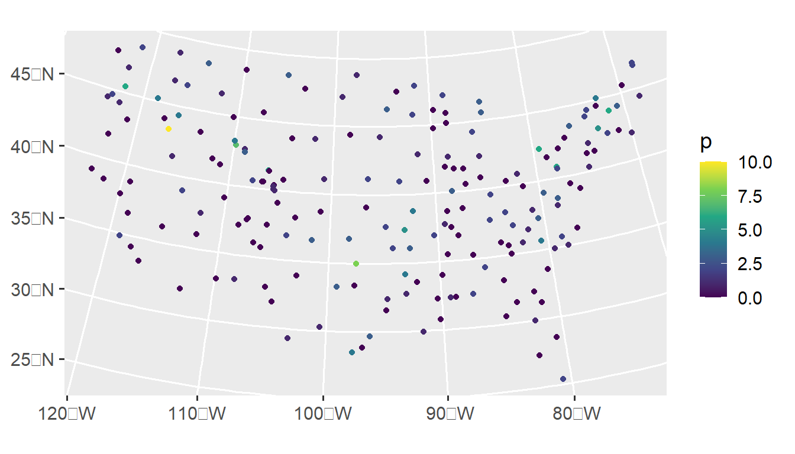

3 Spatial Generalized Linear Models in spmodel
Throughout this section, we will use the spmodel package and the ggplot2 package:
Goals:
- Explain how modeling spatial covariance fits within the structure of a generalized linear model.
- Use the
spglm()andspgautor()functions inspmodelto fit generalized linear models for various model families (i.e., response distributions). - Discuss how the additional
spmodelfeatures from the previous section apply to spatial generalized linear models.
3.1 The Spatial Generalized Linear Model
As with spatial linear models, spatial generalized linear models can be fit in spmodel for point-referenced and areal data. A generalized linear model essentially uses the right-hand-side of Equation 1.4 as a model for a function of the mean of the response vector \(\mathbf{y}\). More formally, the spatial generalized linear model can be written as \[
g(\boldsymbol{\mu}) = \mathbf{X} \boldsymbol{\beta} + \boldsymbol{\tau} + \boldsymbol{\epsilon},
\] where \(g(\boldsymbol{\mu})\) is the link function that “links” a function of the mean of \(\mathbf{y}\) to \(\mathbf{X} \boldsymbol{\beta}\), \(\boldsymbol{\tau}\), and \(\boldsymbol{\epsilon}\). For example, in a spatial Poisson generalized linear model, each element of \(\mathbf{y}\), \(\text{y}_i\), is modeled as a Poisson random variable with mean \(\mu_i\). Denoting the vector of means as \(\boldsymbol{\mu}\), the log of the mean vector of \(\mathbf{y}\) is then modeled as
\[ \text{log}(\boldsymbol{\mu}) = \mathbf{X} \boldsymbol{\beta} + \boldsymbol{\tau} + \boldsymbol{\epsilon}, \]
where the \(\text{log()}\) function is applied element-wise over the mean vector \(\boldsymbol{\mu}\), which is the expected value of \(\mathbf{y}\). In this example, the link function used is the log link. In the binomial generalized linear model family, a popular link function is the logit link, so that the model for the mean of a binomial response vector is
\[
\text{log}\left(\frac{\boldsymbol{\mu}}{1 - \boldsymbol{\mu}}\right) = \mathbf{X} \boldsymbol{\beta} + \boldsymbol{\tau} + \boldsymbol{\epsilon},
\] Table 3.1 shows the response distributions, data types, and link functions available in spmodel.
| Distribution | Data Type | Link Function |
|---|---|---|
| Poisson | Count | Log |
| Negative Binomial | Count | Log |
| Binomial | Binary | Logit |
| Beta | Proportion | Logit |
| Gamma | Skewed | Log |
| Inverse Gaussian | Skewed | Log |
3.2 Model Fitting
The spglm() function is used to fit spatial generalized linear models for point-referenced data, and the spgautor() function is used to fit spatial generalized linear models for areal data. spglm() and spgautor() share similar syntax with splm() and spautor(), respectively, though one additional argument is required:
-
family: The generalized linear model family (i.e., the distribution of \(\mathbf{y}\)). Thefamilyargument can bebinomial,beta,Poisson,nbinomial,Gamma, orinverse.gaussian.
The family argument in spglm() and spgautor() uses similar syntax as the family argument in glm(). One difference, however, is that the link function for the spmodel functions is fixed. For binomial and beta responses, that link is the logit link function, while for Poisson, negative binomial, gamma, and inverse gaussian responses, that link is the log link function.
While spatial generalized linear models can be fit to both point-referenced and areal data, we focus only on fitting spatial generalized linear models to point-referenced data with spglm() for the remainder of this section. Models are fit using a novel application of the Laplace approximation – Ver Hoef et al. (2023) provide further details.
We observed in Section 1.3 that a generalized linear model may be a better choice for the count data in the Alaska moose. We specify a Poisson spatial generalized linear model with the following:
poismod <- spglm(count ~ elev * strat, data = moose,
family = poisson, spcov_type = "spherical")
summary(poismod)
#>
#> Call:
#> spglm(formula = count ~ elev * strat, family = poisson, data = moose,
#> spcov_type = "spherical")
#>
#> Deviance Residuals:
#> Min 1Q Median 3Q Max
#> -1.4245 -0.7783 -0.3653 0.1531 0.5900
#>
#> Coefficients (fixed):
#> Estimate Std. Error z value Pr(>|z|)
#> (Intercept) -2.230575 0.958201 -2.328 0.019919 *
#> elev 0.007623 0.003129 2.437 0.014820 *
#> stratM 2.752234 0.782853 3.516 0.000439 ***
#> elev:stratM -0.010248 0.004472 -2.292 0.021928 *
#> ---
#> Signif. codes: 0 '***' 0.001 '**' 0.01 '*' 0.05 '.' 0.1 ' ' 1
#>
#> Pseudo R-squared: 0.09573
#>
#> Coefficients (spherical spatial covariance):
#> de ie range
#> 3.892 1.163 51204.657
#>
#> Coefficients (Dispersion for poisson family):
#> dispersion
#> 1As with spatial linear models, the broom functions tidy(), glance() and augment(), as well as many other generic functions like plot(), are available for spatial generalized linear models. For example, we glance at the fitted model by running
glance(poismod)
#> # A tibble: 1 × 9
#> n p npar value AIC AICc logLik deviance pseudo.r.squared
#> <int> <dbl> <int> <dbl> <dbl> <dbl> <dbl> <dbl> <dbl>
#> 1 218 4 3 1332. 1338. 1338. -666. 84.3 0.09573.3 Spatial Prediction
We can also make predictions of the mean function at unobserved locations. For example, we can use poismod to predict the mean number of moose (on the link scale) at the spatial locations in moose_preds using predict() by running:
# results omitted
predict(poismod, newdata = moose_preds)We can also use augment():
augment(poismod, newdata = moose_preds)
#> Simple feature collection with 100 features and 3 fields
#> Geometry type: POINT
#> Dimension: XY
#> Bounding box: xmin: 269386.2 ymin: 1418453 xmax: 419976.2 ymax: 1541763
#> Projected CRS: NAD83 / Alaska Albers
#> # A tibble: 100 × 4
#> elev strat .fitted geometry
#> * <dbl> <chr> <dbl> <POINT [m]>
#> 1 143. L 0.207 (401239.6 1436192)
#> 2 324. L -0.0563 (352640.6 1490695)
#> 3 158. L -1.24 (360954.9 1491590)
#> 4 221. M -1.16 (291839.8 1466091)
#> 5 209. M 1.78 (310991.9 1441630)
#> 6 218. L -1.84 (304473.8 1512103)
#> 7 127. L -2.80 (339011.1 1459318)
#> 8 122. L -2.45 (342827.3 1463452)
#> 9 191 L -0.409 (284453.8 1502837)
#> 10 105. L -1.10 (391343.9 1483791)
#> # ℹ 90 more rowsBy default, predict() and augment() return predictions on the link scale. We return predictions on the response scale by running
augmod <- augment(poismod, newdata = moose_preds, type = "response")And we can visualize these predictions by running
ggplot(augmod, aes(color = .fitted)) +
geom_sf() +
scale_color_viridis_c(limits = c(0, 40)) +
theme_gray(base_size = 14)
3.4 Additional spmodel Features
All advanced features available in spmodel for spatial linear models are also available for spatial generalized linear models. This means that spatial generalized linear models in spmodel can accommodate big spatial data (though far less than in the spatial linear model case), fixing spatial covariance parameters, fitting and predicting for multiple models, non-spatial random effects (on the link scale), partition factors, anisotropy (on the link scale), and prediction. spmodel has a variety of additional simulation functions used to simulate binary, proportion, count, and skewed data:
- Binary data:
sprbinom() - Proportion data:
sprbeta() - Count data:
sprpois()andsprnbinom() - Skewed data:
sprgamma()andsprinvgauss()
With these simulation functions, the spatial covariance parameters and mean vector are specified on the appropriate link scale. For sprbinom() and sprbeta(), this is the logit link scale. For the other functions, this is the log link scale. We simulate one realization of Poisson data where on the link scale, the mean is zero and the spatial covariance structure is specified via params, by running
params <- spcov_params("exponential", de = 1, ie = 0.5, range = 5e5)
sulfate$p <- sprpois(params, data = sulfate)We visualize this realization by running
ggplot(sulfate, aes(color = p)) +
geom_sf() +
scale_color_viridis_c() +
theme_gray(base_size = 14)
3.5 Spatial Generalized Autoregressive Mdoels
So far we discussed how to formulate spatial generalized linear models using spglm(), building off the construction of spatial linear models fit using splm(). Similarly, we can formulate spatial generalized autoregressive models using spgautor(), building off the construction of spatial autoregressive models fit using spautor(). Spatial generalized autoregressive models can be fit to binomial, proportion, count, and skewed data by providing the family argument, as with the models fit using splm(). For example, we model exp(log_trend) (which is strictly positive) as a gamma random variable with the simultaneous autoregressive spatial covariance by running
sealgmod <- spgautor(exp(log_trend) ~ 1, family = Gamma,
data = seal, spcov_type = "sar")
summary(sealgmod)
#>
#> Call:
#> spgautor(formula = exp(log_trend) ~ 1, family = Gamma, data = seal,
#> spcov_type = "sar")
#>
#> Deviance Residuals:
#> Min 1Q Median 3Q Max
#> -0.31970 -0.10003 0.04354 0.07266 0.20661
#>
#> Coefficients (fixed):
#> Estimate Std. Error z value Pr(>|z|)
#> (Intercept) -0.07106 0.02203 -3.226 0.00126 **
#> ---
#> Signif. codes: 0 '***' 0.001 '**' 0.01 '*' 0.05 '.' 0.1 ' ' 1
#>
#> Coefficients (sar spatial covariance):
#> de range extra
#> 3.783e-04 2.164e-03 4.106e-05
#>
#> Coefficients (Dispersion for Gamma family):
#> dispersion
#> 61.893.6 R Code Appendix
library(spmodel)
library(ggplot2)
poismod <- spglm(count ~ elev * strat, data = moose,
family = poisson, spcov_type = "spherical")
summary(poismod)
glance(poismod)
nbmod <- spglm(count ~ elev * strat, data = moose,
family = nbinomial, spcov_type = "spherical")
loocv(poismod)
loocv(nbmod)
# results omitted
predict(poismod, newdata = moose_preds)
augment(poismod, newdata = moose_preds)
augmod <- augment(poismod, newdata = moose_preds, type = "response")
ggplot(augmod, aes(color = .fitted)) +
geom_sf() +
scale_color_viridis_c(limits = c(0, 40)) +
theme_gray(base_size = 14)
binmod <- spglm(presence ~ elev * strat, data = moose,
family = binomial, spcov_type = "cauchy")
augment(binmod, newdata = moose_preds, type = "response")
params <- spcov_params("exponential", de = 1, ie = 0.5, range = 5e5)
sulfate$p <- sprpois(params, data = sulfate)
ggplot(sulfate, aes(color = p)) +
geom_sf() +
scale_color_viridis_c() +
theme_gray(base_size = 14)
sealgmod <- spgautor(exp(log_trend) ~ 1, family = Gamma,
data = seal, spcov_type = "sar")
summary(sealgmod)